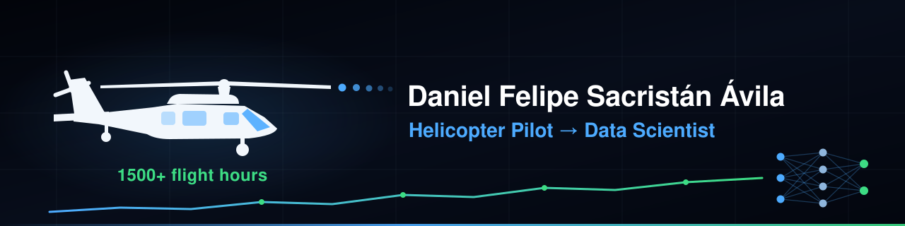

🏋️ Rehab Strength Dashboard
LIVEStreamlit health-analytics app tracking workouts, sleep and recovery after a stroke. Full data pipeline, statistical testing, CI and a live deployment.


I'm a Captain in the Colombian Air Force — UH-60 Black Hawk copilot and UH-1 pilot — transitioning into data science.
My path into data began while recovering from a stroke: I started building dashboards to track my own rehabilitation — therapy, training load, sleep and recovery — and what began as personal tracking grew into deployed, tested analytics applications and a new career direction.
I bring cockpit discipline to data work: reproducible pipelines, statistical rigor, and clear communication.
Streamlit health-analytics app tracking workouts, sleep and recovery after a stroke. Full data pipeline, statistical testing, CI and a live deployment.
Spanish NLP classifying news verdicts (true / false / uncertain) from Colombian fact-checks. Web-scraped dataset, BETO fine-tuning, and responsible-ML docs: model card, datasheet & data statement.
Forecasting Colombia's hourly wholesale electricity spot price (precio de bolsa) from public SIMEM/XM data, with a self-updating ingestion pipeline on GitHub Actions.
MSc thesis: NLP on NASA ASRS aviation safety reports — taxonomic coverage of incident narratives in rotorcraft operations, with disaggregated evaluation audited against 1500+ flight hours of domain expertise.